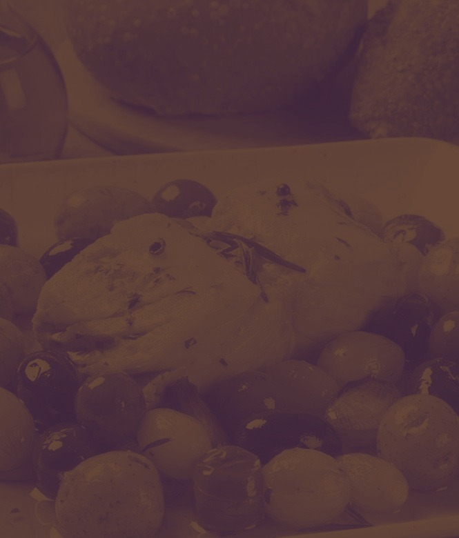
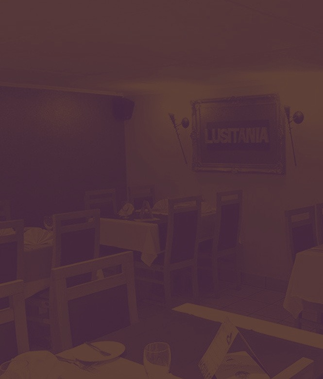
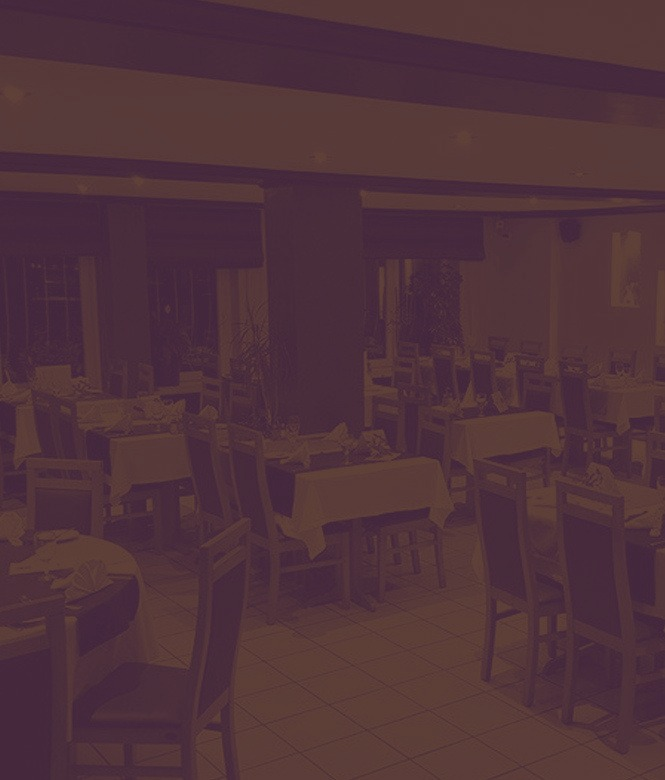

Restaurant Lusitânia
Le Portugal plus près de nous.
Cuisine portugaise et française à Dippach, depuis 2007 — bacalhau, grillades et cataplana, dans un cadre chaleureux.
Le Portugal, à Dippach depuis 2007.
Une cuisine portugaise et française variée — bacalhau, seiches grillées, filet de bœuf, côte à l'os — préparée avec soin par la maison, dans un cadre chaleureux propice aux repas de famille.
Terrasse d'été, parking, wifi gratuit, et de temps en temps une soirée à thème — la « soirée Fado » — pour retrouver l'ambiance du Portugal.
« Le Portugal plus près de nous. »
Gambas cataplana, scampis flambés, grillade mixte de poissons — la mer portugaise, généreusement servie.

Ce qu'on y mange.
Une sélection de plats — la carte complète, avec les prix, est servie en salle.
Sélection indicative ; carte détaillée et prix à confirmer en salle.
Mariages, baptêmes, communions.
La salle peut être privatisée pour vos grandes occasions — la maison propose un cadre chaleureux pour recevoir famille et amis. Capacité et devis à confirmer directement avec le restaurant.

163 Route de Luxembourg, Dippach.
restaurant-lusitania.lu ne répond plus — ceci est une proposition de nouveau site, à partir de vos photos et de votre carte.